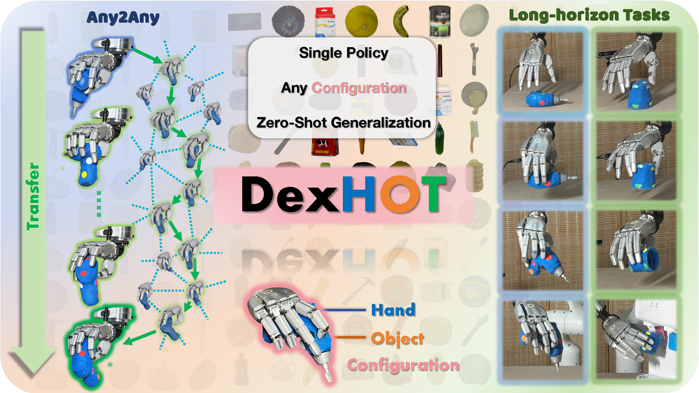
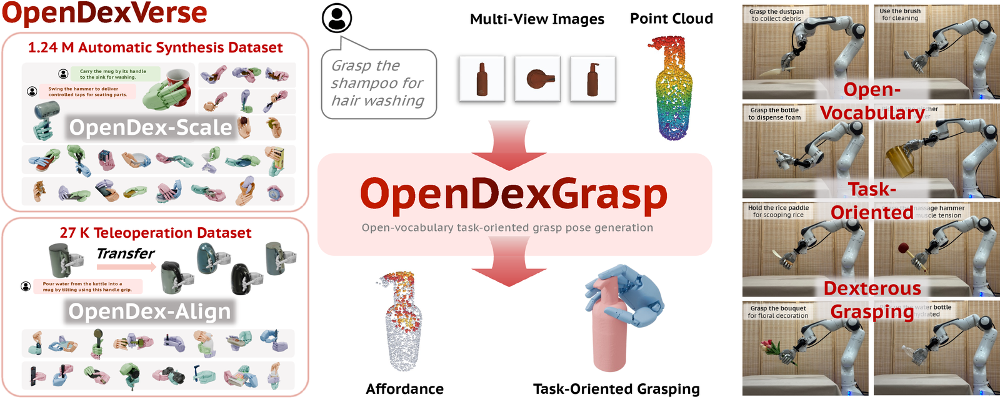
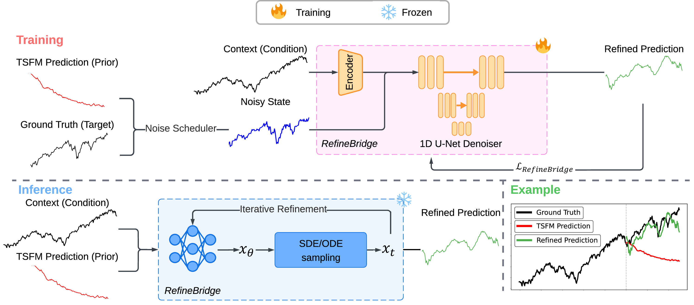

Selected work
Research
Preprints1 preprint
-

DexHOT: Learning Hand–Object Configuration Transfer for Dexterous Manipulation
In submission
Recasts dexterous manipulation as hand–object configuration transfer: rather than specifying goals by object pose alone, DexHOT learns a single reusable primitive that moves between feasible configurations jointly defining hand articulation and object pose, then chains them hierarchically into long-horizon behaviors that generalize to unseen objects and a real hand.
Paper soonWebsite Code soon
Publications2 publications
-

OpenDexGrasp: Open-Vocabulary Task-Oriented Dexterous Grasping
[CoRL 2026] Conference on Robot Learning 2026 Oral (Top 1% of submissions)
Generates executable, task-oriented dexterous grasps from free-form language and multi-view observations. It pairs large-scale automatic grasp synthesis with human teleoperation (the OpenDexVerse dataset) to learn a shared vision-language-to-action latent, producing functionally correct grasps that generalize to unseen object categories and run on a real robot.
-

RefineBridge: Generative Bridge Models Improve Financial Forecasting by Foundation Models
[ICASSP 2026] International Conference on Acoustics, Speech and Signal Processing 2026 Oral (Top 8% of submissions)
A Schrödinger-bridge refinement module that treats a frozen time-series foundation model’s forecast as a generative prior and learns context-conditioned transport toward the ground truth — complementing rather than fine-tuning the backbone to sharpen financial forecasts under non-stationarity, heavy tails, and high-frequency noise.
Academic service
Conference Reviewer: ICRA'27, ICASSP'27.